The real product again: managym academy --policy qa_bot.json play --opponent qa_bot on the static build, the same persistent browser profile and game store as the first pass below (so earlier games were present), 1280×800. A new 23-turn game against the trained bot (145 steps, 63 of your decisions) was played to the end, then opened from Games.
Review opened with the analysis already done (it ran during the game's end), 38 move marks. Checked: no priority-stop toggles, no empty Stack, no "Space to …", no grade words; Next key moment sits in the transport and jumped to "Its expected score moved 69 → 82 by your next decision"; arrow keys step positions.
Found and fixed: at a 9-option Learn decision with Pop Quiz on the stack, the analysis list showed one option. Its rows wrapped to four lines of 16 px serif ("✓Discard / Firebending / Lesson, then draw / a card"), 78–102 px each. The spec's Bolt game never met long option names. Now a recording's option row keeps one line like its move (14 px, ellipsis, the full choice as its title and accessible name; "you" / "its choice" outside the ellipsis), and the list's column is bounded so the row cannot widen the rail. Same position: 3 of 9 options fully shown, every row 32 px.
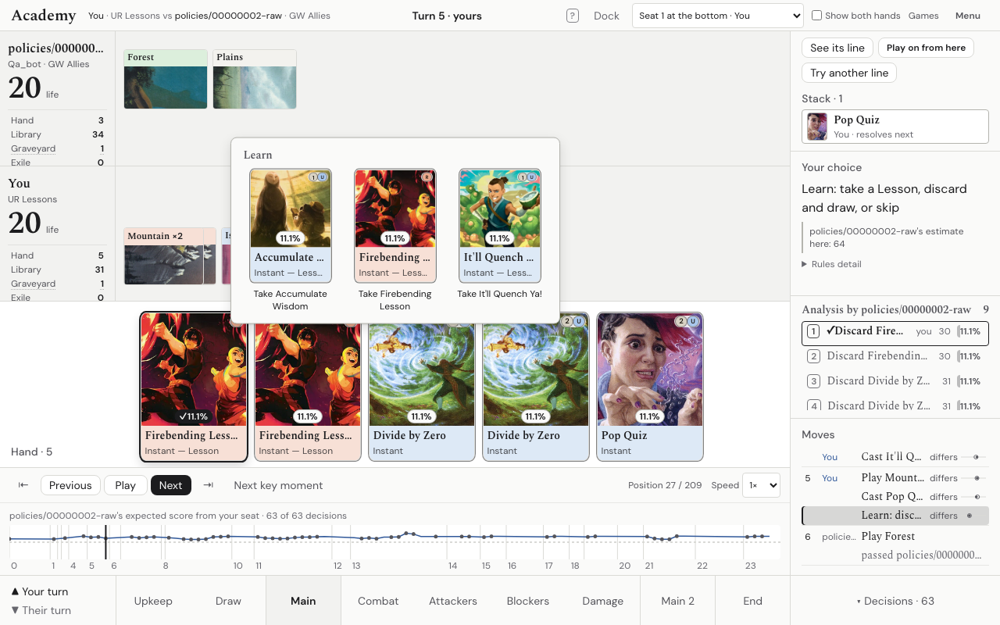
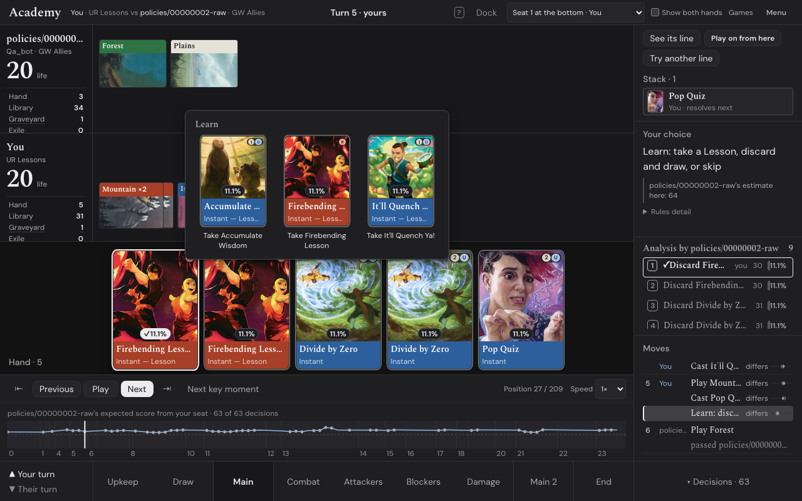
At this position Moves shows 6 rows, not 8: the stack item and Try another line (this game is still inside Study's retention window) take the height. The ≥8 bound holds at positions without them (spec).
Found and fixed: while a policy's line was shown, the rail went back to Play's layout: an empty Stack block, "Waiting", an empty "All legal choices 0" box, and Moves squeezed into the bottom quarter. The rail decided "read-only" from whether moves jump, and a line disables jumping. Board now takes readOnly (default: moves jump); Replay passes it everywhere except a live Study branch, which still answers. A read-only position without a decision also drops the empty choices box.
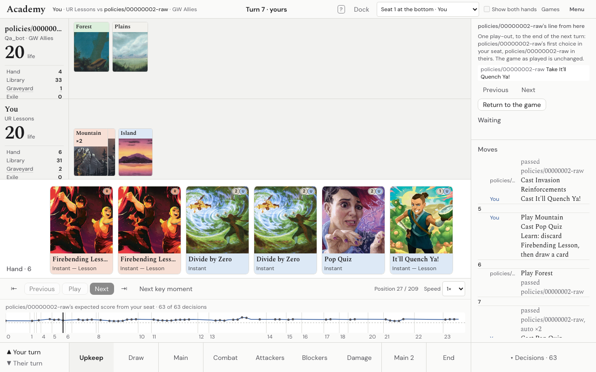
npm test 667 passed; npm run check 0 errors. Policy e2e (study-review, policy-runtime, input-recovery): 14 passed. Release config, the replay-facing specs (unified-replay, watch, game-history, stops, laptop-comfort): 20 passed.
playwright.study.config.ts (study.spec.ts) fails at setup with "Study source omitted its participant credential" — identically with this pass's changes reverted. Its helper speaks the old observation/action socket protocol; no CI job runs the config. Not caused by this Task's recent work; not fixed.policies/00000002-raw fill the who column and headings; that is the registered name of the local checkpoint, not this change.The real product throughout: managym academy --policy qa_bot.json play (the CLI, built static client), with a real checkpoint from etude train manabot/recipes/local.py as the opponent and analysing policy, default UR Lessons v GW Allies decks. A headless Chromium drove one persistent profile, as a returning person would. Origin automated_validation; everything under ignored .runs/qa/.
Two games were played on the base build (3be5a0cfb2, in a detached worktree, same port and profile): one against the trained bot and one against Search 4. Then the new build was started on the same store.
numbers was null before). My record: one row per opponent, with 0–79% Wilson intervals.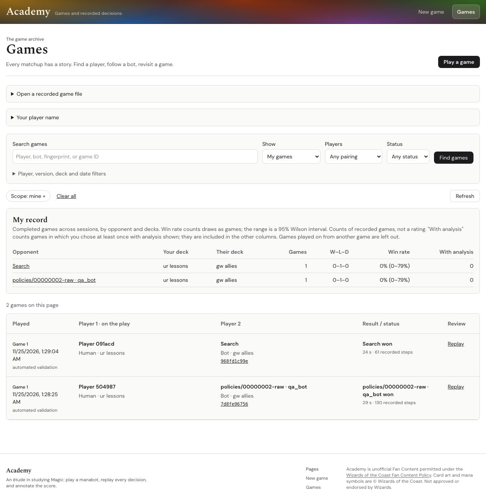
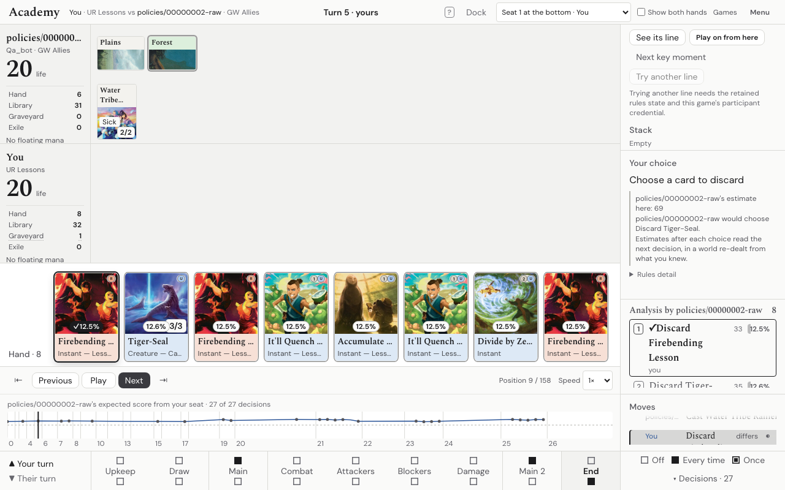
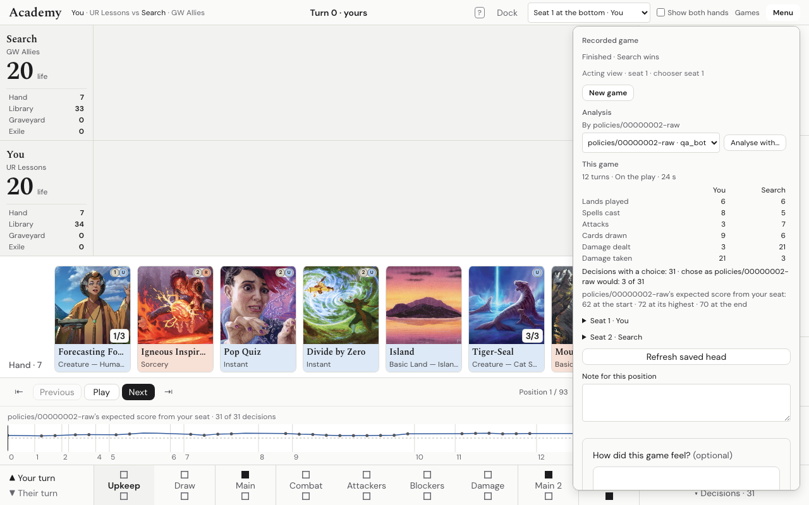
The old bot game showed 21 move marks with 1 "same", while the Menu said "chose as … would: 2 of 27" and the chart had 27 points. A move such as "Cast Firebending Lesson, targeting Plains" holds several decisions (the cast, the target, the mana payments), and its mark read only the first one. The matched choice here was the target (event 73), so the move read "differs".
Fix: moveMarks now counts every analysed decision from a move up to the next. A move whose decisions split reads "1 of 2 same", and each mark carries data-agreed/data-of. On the same game: marks sum to 27 decisions and 2 same, equal to the summary. Unit test: "counts a cast's target choice with the cast" (fails on the old code). The acceptance spec's (f) now sums the marks and also checks that they cover every chart point.

analysis messages were received.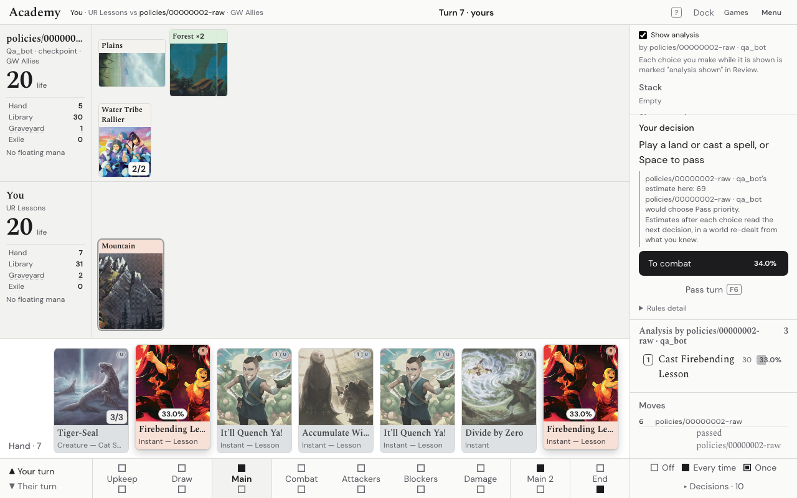
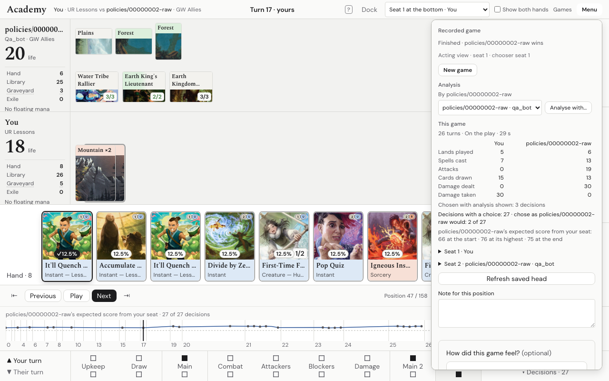
shown-hand).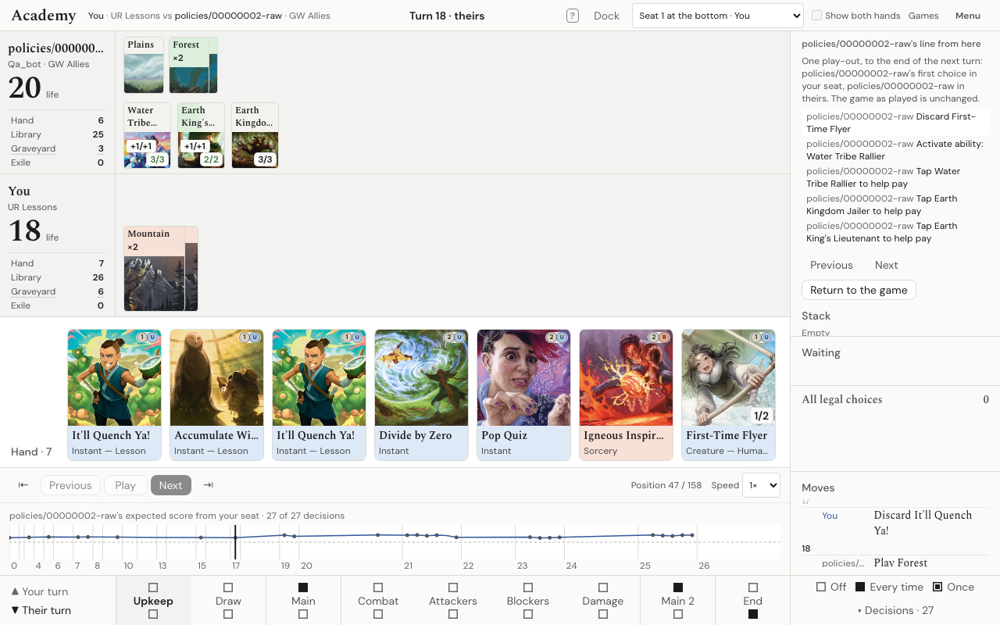
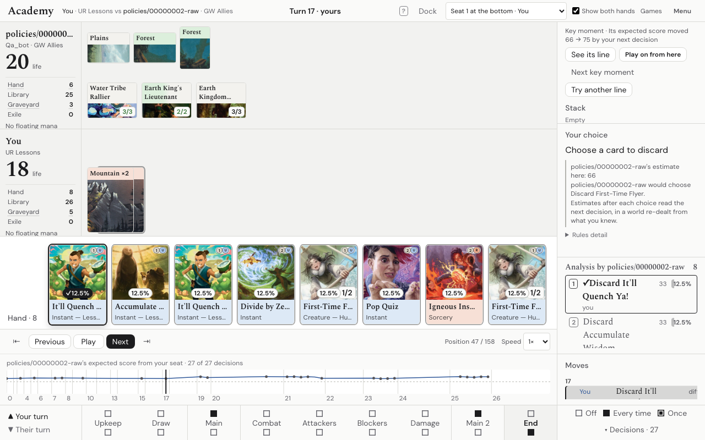
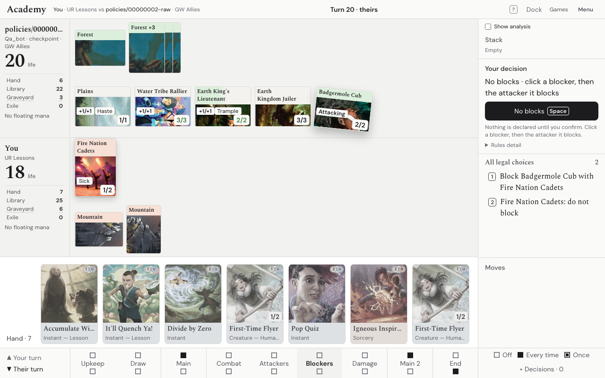
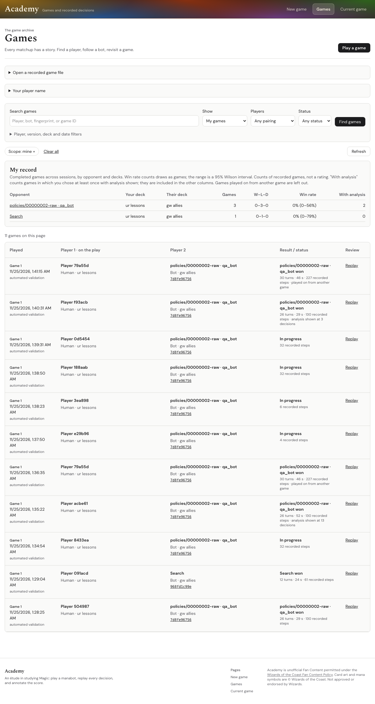
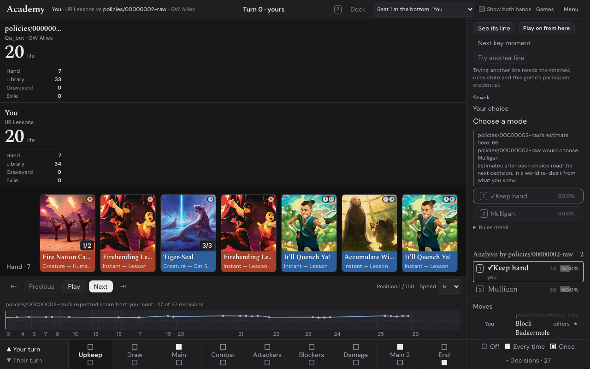
The design lint (npm test) failed on the "analysis shown" label's font-style: italic (slice 6). Italic is not in the type system, so it was removed.
npm test: 666 passed after the fix. npm run check: 0 errors. Policy e2e study-review.spec.ts: 2 passed. pytest on played analysis, replay, played-on, numbers and record reducers: 36 passed.
test:e2e:release.